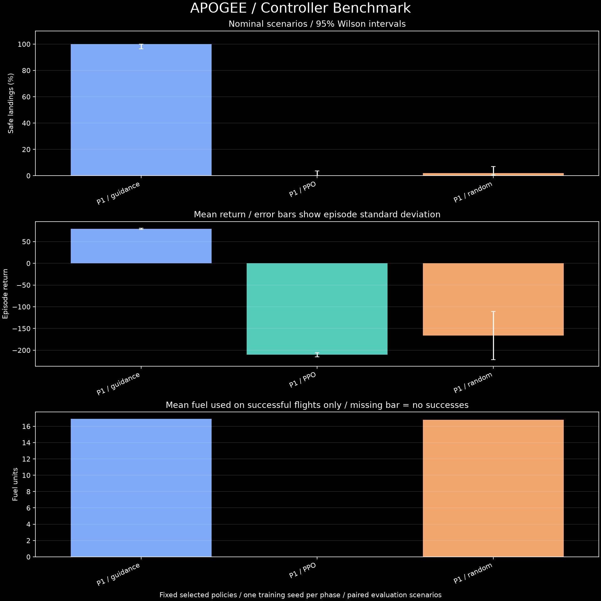
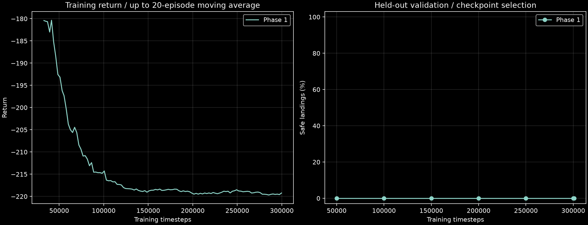

REPRODUCIBLE CONTROLLER EVALUATIONAPOGEE / RESULTS
Fixed trained policies, paired scenario seeds, and explicit uncertainty. GUIDANCE is a reference controller; PPO is learned.
Phase 1: PPO; selected checkpoint at 50,000 PPO steps of 301,056 trained. A selected checkpoint at step 0 represents imitation before PPO updates, not a PPO improvement.
Evaluation episodes
Reported controller groups
Success interval95% Wilson
Intervals describe evaluation episodes for one fixed policy, not variability across training seeds. Fuel is conditional on a safe landing; N/A means no successful flights. Phase-3 stresses are separate interventions, not increasing levels of one variable.



Per-episode CSV / Summary CSV / Reproducibility manifest / Full methodology